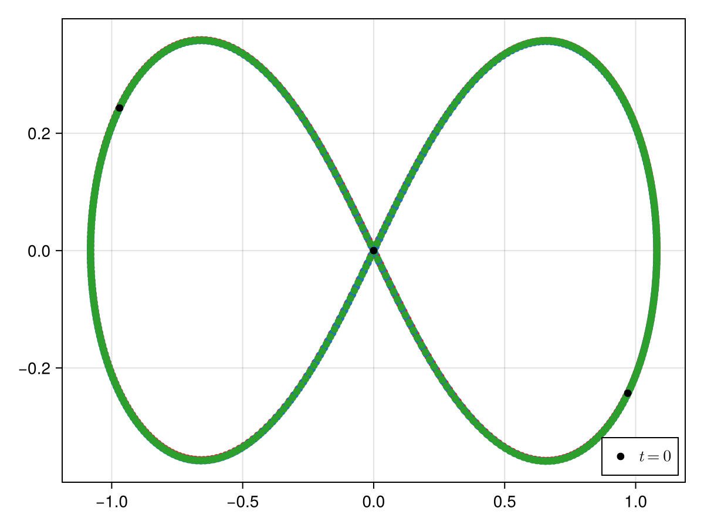

Three Body Problem
The default initial condition is the figure-eight choreography of [5], in which the three equal masses chase one another along a single closed curve — all three orbits below lie on top of each other. The default window is one of its periods, so the plot closes.
The 4096-member initial-condition grid of [6] is available as initial_conditions, but every one of its members ends in a collision, so those are usable only on a window that stops short of it — see GeometricProblems.ThreeBody.sympnets_initial_condition.
using GeometricProblems.ThreeBody: hodeproblem
using GeometricIntegrators: ImplicitMidpoint, integrate
using CairoMakie
using LaTeXStrings
morange = RGBf(255 / 256, 127 / 256, 14 / 256)
mred = RGBf(214 / 256, 39 / 256, 40 / 256)
mpurple = RGBf(148 / 256, 103 / 256, 189 / 256)
mblue = RGBf(31 / 256, 119 / 256, 180 / 256)
mgreen = RGBf(44 / 256, 160 / 256, 44 / 256)
pr = hodeproblem()
sol = integrate(pr, ImplicitMidpoint())
first_body = zeros(2, length(sol.q))
second_body = zeros(2, length(sol.q))
third_body = zeros(2, length(sol.q))
for index in axes(sol.q, 1)
data_for_present_index = sol.q[index]
first_body[:, index + 1] = data_for_present_index[1:2]
second_body[:, index + 1] = data_for_present_index[3:4]
third_body[:, index + 1] = data_for_present_index[5:6]
end
fig = Figure()
ax = Axis(fig[1, 1])
scatter!(ax, first_body, color = mred)
lines!(ax, first_body, color = mred, linestyle = :dash)
scatter!(ax, second_body, color = mblue)
lines!(ax, second_body, color = mblue, linestyle = :dash)
scatter!(ax, third_body, color = mgreen)
lines!(ax, third_body, color = mgreen, linestyle = :dash)
scatter!(ax, first_body[:, 1]', color = :black, label = L"t = 0")
scatter!(ax, second_body[:, 1]', color = :black)
scatter!(ax, third_body[:, 1]', color = :black)
axislegend(position = :rb)
fig
Library functions
GeometricProblems.ThreeBody — Module
ThreeBodySystem parameters:
m₁: mass of body 1m₂: mass of body 2m₃: mass of body 3G: gravitational constant
The default initial condition is the figure-eight choreography (figure_eight, aliased as initial_condition) and the default window is one of its periods. The 4096-member initial_conditions grid of [6] is also provided, but every one of its members ends in a collision — see sympnets_initial_condition — so those are usable only on a window that stops short of it.
GeometricProblems.ThreeBody.DEFAULT_TIMESPAN — Constant
One period of the default figure_eight initial condition.
GeometricProblems.ThreeBody.DEFAULT_TIMESTEP — Constant
Four hundred steps per period of the default figure_eight initial condition. Over one period ImplicitMidpoint then conserves energy to $4 \times 10^{-9}$ and closes the orbit to $1.3 \times 10^{-3}$; Gauss(2) reaches $3 \times 10^{-15}$ and $1.3 \times 10^{-7}$.
Neither this nor any other step size makes sympnets_initial_condition integrable past its collision, and neither does exchanging the nonlinear solver: over $t \in [0, 1]$ the default Newton method with a backtracking line search emits 596, 1346, 390, 321 and 361 warnings for $\Delta{}t = 0.5, 0.05, 0.01, 0.005, 0.001$, while the trust-region DogLeg solver emits 1–2 — but commits an energy error of 12 to 45 either way, and the two disagree on where the bodies end up. The trust region is merely quieter about the same failure, so the default Newton solver is kept; on problems that are solvable the two agree bit for bit.
GeometricProblems.ThreeBody.G — Constant
Constant taken from [6].
GeometricProblems.ThreeBody.figure_eight — Constant
The default initial condition: the figure-eight choreography of [5], in which three equal masses chase one another along a single figure-eight curve.
It is the default because, unlike every member of initial_conditions (see sympnets_initial_condition), it has no close encounters — the smallest mutual distance over a period is 0.69 — so it can be integrated over many periods. Over one period DEFAULT_TIMESTEP conserves energy to $4 \times 10^{-9}$ and closes the orbit to $1.3 \times 10^{-3}$ with ImplicitMidpoint.
The momenta equal the velocities because the masses are one: $v_3 = (-0.93240737, -0.86473146)$ and $v_1 = v_2 = -v_3 / 2$.
GeometricProblems.ThreeBody.figure_eight_period — Constant
Period of the figure_eight choreography for $G = m_1 = m_2 = m_3 = 1$.
GeometricProblems.ThreeBody.initial_condition — Constant
Alias for figure_eight, the default initial condition of the problem constructors.
GeometricProblems.ThreeBody.initial_conditions — Constant
Here we get 4096 trajectories that should be similar to the data used in [6].
GeometricProblems.ThreeBody.m₁ — Constant
Constant taken from [6].
GeometricProblems.ThreeBody.m₂ — Constant
Constant taken from [6].
GeometricProblems.ThreeBody.m₃ — Constant
Constant taken from [6].
GeometricProblems.ThreeBody.sympnets_initial_condition — Constant
The first member of initial_conditions. It is not the default initial condition, because it ends in a collision: the bodies collide at $t \approx 0.08867$, where the solution ceases to exist. Successive RK4 refinements resolve a smallest mutual distance of $1.95 \times 10^{-3}$, $5.39 \times 10^{-4}$, $4.78 \times 10^{-5}$ and $2.93 \times 10^{-6}$ for $\Delta{}t = 10^{-4} \ldots 10^{-7}$ — the distance keeps collapsing at a fixed time rather than bottoming out — and two RK4 references at $\Delta{}t = 10^{-6}$ and $5 \times 10^{-7}$ disagree by 36 in position, so there is no computable trajectory to compare against either.
Every member of initial_conditions behaves this way: all 4096 come within 0.04 of a collision within $t \in [0, 5]$. Integrating any of them past its collision is not a matter of the step size or of the nonlinear solver (see DEFAULT_TIMESTEP); it needs regularization (Kustaanheimo–Stiefel, Levi-Civita) or an adaptive time transformation, neither of which this package provides. Use it only on a window that ends before the collision.
GeometricProblems.ThreeBody._reshape — Method
Turn array into a vector.
GeometricProblems.ThreeBody.default_parameters — Method
Default parameters taken from [6].
GeometricProblems.ThreeBody.hodeensemble — Function
Hamiltonian ensemble for the three-body problem (varying initial conditions and/or parameters).
GeometricProblems.ThreeBody.hodeproblem — Function
hodeproblem(q₀, p₀; timespan, timestep, parameters)Hamiltonian version of the three-body problem
Constructor with default arguments:
hodeproblem(
q₀ = [0.97000436, -0.24308753, -0.97000436, 0.24308753, 0.0, 0.0],
p₀ = [0.46620368, 0.43236573, 0.46620368, 0.43236573, -0.93240737, -0.86473146];
timespan = (0.0, 6.32591398),
timestep = 0.01581478495,
parameters = (m₁ = 1.0, m₂ = 1.0, m₃ = 1.0, G = 1.0)
)GeometricProblems.ThreeBody.lodeensemble — Function
Lagrangian ensemble for the three-body problem (varying initial conditions and/or parameters).
GeometricProblems.ThreeBody.lodeproblem — Function
lodeproblem(q₀, p₀; timespan, timestep, parameters)Lagrangian version of the three-body problem
Constructor with default arguments:
lodeproblem(
q₀ = [0.97000436, -0.24308753, -0.97000436, 0.24308753, 0.0, 0.0],
p₀ = [0.46620368, 0.43236573, 0.46620368, 0.43236573, -0.93240737, -0.86473146];
timespan = (0.0, 6.32591398),
timestep = 0.01581478495,
parameters = (m₁ = 1.0, m₂ = 1.0, m₃ = 1.0, G = 1.0)
)References
- [5]
- A. Chenciner and R. Montgomery. A remarkable periodic solution of the three-body problem in the case of equal masses. Annals of Mathematics 152, 881–901 (2000).
- [6]
- P. Jin, Z. Zhang, A. Zhu, Y. Tang and G. E. Karniadakis. SympNets: Intrinsic structure-preserving symplectic networks for identifying Hamiltonian systems. Neural Networks 132, 166–179 (2020).